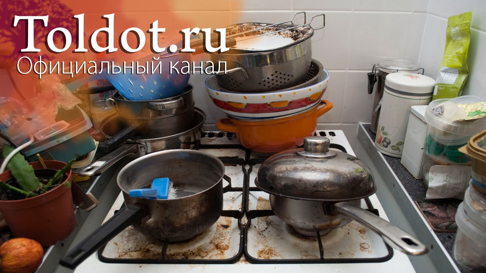

Как сохранить порядок в доме.
2020.10.11 01:02

Главная О нас Наши товары Акции Отзывы Контакты Меню Солнечные руки Интернет-Магазин Психология мужчин Отношения Отношения между мужчиной и женщиной Что хочет женщина Детская психология Беседы с психологом Дом Семейный бюджет Полезные советы на все случаи жизни Статьи о недвижимости Обустройство квартиры и уют в доме Красота и здоровье Красота и здоровье Мода и стиль Похудение и снижение веса Психология Уверенность в себе. Как повысить самооценку Исполнение желаний. Сила мысли Радость жизни. Интересные статьи Праздники Свадьба Подарки Позитив Отдых, Путешествия и туризм Интересные истории из жизни людей Рецепты Первые блюда Вторые блюда Салаты Соусы Торты и пирожные Десерты Напитки Кулинарные советы Детское меню О нас Отзывы Главная Рубрики проекта Отношения Психология мужчин Отношения между мужчиной и женщиной Что хочет женщина Беседы с психологом Детская психология Психология Как повысить самооценку Исполнение желаний Интересные статьи Дом Полезные советы Как заработать деньги Интересные новости Статьи о недвижимости Обустройство квартиры Красота и здоровье Красота и здоровье Мода и стиль Похудение и снижение веса Праздники Свадьба Подарки Позитив Отдых, Путешествия и туризм Интересные истории из жизни людей Рецепты Первые блюда Вторые блюда Салаты Соусы Торты и пирожные Десерты Напитки Кулинарные советы Детское меню Главная Обустройство квартиры Уют в доме
Как сохранить порядок в доме.
Проблема сохранения уюта и порядка в доме волнует многих женщин. Так сложно в повседневной суете найти время для уборки и разгребания накопившихся завалов. Если честно, то вовсе и не хочется тратить на это свое свободное время, особенно летом, когда на улице стоит хорошая погода. Ведь можно придумать столько интересных занятий, вместо того, чтобы провести весь день дома с тряпками и швабрами в обнимку.
Для меня вопрос сохранения порядка в доме стал особенно остро, когда я вышла на работу после полуторагодовалого перерыва, когда я сидела дома с ребенком. Стоило только выйти на работу, как сразу же навалилось столько забот и хлопот, что времени на домашние дела у меня совсем не оставалось (конечно, можно заработать деньги и нанять домработницу, но я такой вариант не рассматриваю). Прожив в таком режиме несколько месяцев, я поняла, что надо что-то придумывать, иначе наша квартира скоро будет напоминать заваленный хламом склад вещей, где практически нереально что-то найти. Вариант уборки квартиры в выходные дни я сразу же отмела, потому что очень сильно ценю эти нечастые дни отдыха и предпочитаю проводить их вместе с семьей, встречаться с друзьями, выезжать на природу, а не тратить целый день на наведение порядка. На
эту тему рекомендую прочитать статью Анастасии Гай «Как быт укрепляет любовь» .
Поэтому для меня остался только один вариант – наводить порядок дома в течение рабочей недели. Осталось только наметить четкий план действий и составить для себя какое-то подобие графика уборки.
Составляем список дел.
Я решила разбить всю работу по дому на несколько этапов и каждый день выполнять только один пункт из этого списка. Через месяц после этого нововведения наша квартира стала выглядеть по-другому: намного чище, уютнее и свежее. При этом на уборку я стала тратить не более 30 минут в день. А раньше, чтобы привести квартиру в такое состояние, я потратила бы целый день, но уже на следующие сутки моей работы обычно было не видно.
Итак, с чего я начала действовать? Первое, что я сделала, это составила приблизительный список дел по дому. Получилось примерно следующее:
Почистить ванну и раковину в ванной.
Помыть зеркало в ванной и раковину на кухне.
Пропылесосить.
Помыть пол.
Протереть шкафчики на кухне и т.д.
Постарайтесь сгруппировать дела так, чтобы по примерным подсчетам на выполнение каждого пункта списка, у вас уходило не более 15-20 минут. Каждый пункт плана – это один день. Так же рекомендую прочитать статью «Похвастушки о чистоте.Чистота и порядок в доме зависит только от нас!»
Начинаем действовать.
Я решила начать воплощать свой план в действие с того, что не люблю делать больше всего – с уборки в ванной комнате. Обычно чистоту ванной комнаты в первую очередь оценивают по состоянию раковины и ванной, поэтому в первый день я занялась именно этим. Засекаем 20 минут и начинаем действовать!
Оказалось, что за 20 минут можно сделать очень многое! Я успела почистить раковину (около 5 минут), ванную (5-7 минут), протереть зеркало (3 минуты) и разобрать накопившиеся на батареях и вешалках полотенца и белье. Ванная комната засияла чистотой!
Теперь важно как можно дольше сохранять результат. Я взяла себе за правило – каждый раз, после принятия душа, проверять порядок в ванной, не допускать скопления там одежды, полотенец и каждый раз ополаскивать раковину. На все это уходит не более трех минут.
День второй – уборка в туалете.
Пока залитое в унитаз чистящее средство начнет действовать, можно заняться протиркой стен в туалете, чисткой коврика и мытьем пола в туалетной комнате. Когда с этими делами будет покончено, останется только закончить чистку унитаза и смыть остатки моющего средства. На все эти дела я потратила около 15 минут.
День третий – чистка ковров.
Что касается чистки ковров, то раньше я все время откладывала это занятие на «потом», так как наш ребенок очень боится пылесоса и всегда начинает плакать, как только увидит этого «страшного зверя». Поэтому мне удавалось пропылесосить квартиру только тогда, когда ребенок проводил время у бабушки (то есть в выходные дни). Но сейчас, не желая отступать от моего плана «двадцатиминутной уборки в день в течение рабочей недели», я решила включить это
неприятное занятие в расписание ежедневных домашних дел. В тот день, когда мне по плану нужно пропылесосить квартиру, возвращаясь вечером после работы всей семьей домой, я ненадолго оставляю малыша с мужем погулять во дворе, а сама быстренько занимаюсь уборкой. Или наоборот, сама гуляю с ребенком, а муж в это время пылесосит. В итоге – квартира чистая, а выходные освобождены для более приятных дел.
На четвертый день можно заняться уборкой на кухне, мытьем полов, приведением в порядок вещей в гардеробной и т.д. Главное, не забывать, что на каждое дело вы должны тратить не более 20 минут в день и стараться не заниматься уборкой в выходные. Ещё раз рекомендую прочитать статью «Как быт укрепляет любовь» .
Еще несколько полезных советов:
Раковина на кухне останется чистой исверкающей намного дольше, если протирать ее сухим полотенцем после каждого мытья посуды. Я стараюсь мыть посуду сразу же после еды и не допускать ее скопления в раковине, особенно на ночь. Перед сном я всегда насухо вытираю раковину. Для этой цели я завела специальное полотенце, которое всегда лежит рядом с раковиной.
Заправляйте кровать сразу же, как только встали с нее. Я воспринимаю это занятие как небольшую зарядку, позволяющую проснуться. Складывая постельное белье, я стараюсь нагибаться к прямым ногам, чтобы мышцы растянулись после сна. Накидывая на кровать покрывало, не горбите спину, а наоборот, прогибайтесь в пояснице. Такой подход к делу не только сэкономит время, но и настроит на дальнейшее занятие физическими упражнениями. И
еще я заметила такую вещь: если я по какой-либо причине не заправлю кровать сразу после сна, то потом чаще всего я не успеваю это сделать перед уходом на работу. В итоге кровать пылится весь день до самого вечера. Какие делать упражнения для спины утром, смотрите ЗДЕСЬ .
Наверное, в каждой квартире есть такие места, где постоянно образуются скопления всяких ненужных вещей: платежные квитанции, какие-то бумаги, старые газеты, одежда и т.д. У нас тоже есть несколько таких мест. Например, в прихожей, прямо на полу мой муж обычно кидает приходящие счета, рекламные буклеты, газеты – в общем, все то, что закидывают нам в ящик почтальоны и рекламные агенты. Вся эта кипа ненужной макулатуры копится до определенного времени, потом я все это выкидываю в мусорное ведро. Недавно я завела для этой цели специальную коробку, отдекорировала ее в цветах нашего интерьера и показала всем членам семьи, куда теперь надо складывать ненужные бумаги. После этого style=’mso-spacerun:yes’ порядок в доме, точнее в коридоре, стал держаться намного дольше.
То же самое касается и одежды. У нас часто одежда копится на компьютерном стуле, на двери или на диване. Стало намного лучше после того, как я завела специальную корзину для грязного белья, а вещи в гардеробной развешала по отдельным плечикам. Конечно, потребовалось некоторое время, чтобы приучить членов семьи класть грязную одежду в корзину, а чистую – возвращать в шкаф. Но результат стоил этого! Как приучить мужчину к порядку, читайте в статье «Как приучить мужчину помогать по дому?» .
Не допускайте скопления мусора.
Старайтесь избавляться от мусора сразу же, как только его заметили. Очень часто у нас в квартирах скапливается столько ненужных вещей, которые ждут своего часа, когда же мы от них, наконец, избавимся. На самом деле, выкинув все эти ненужные вещи, вы увидите, как много освободится места, станет легче дышать, и квартира будет выглядеть намного чище и уютнее.
С недавнего времени я стала включать в свой ежедневный график уборки этот пункт по избавлению от мусора. За 15 минут я успеваю пробежаться по всем комнатам и собрать все ненужные вещи в мусорный пакет. Для начала, думаю, было бы полезно определиться с тем, что можно назвать «мусором». Я составила для себя некоторый перечень вещей, скопление которых я не должна допускать в квартире и выкидывать их сразу же после обнаружения.
Получилось примерно следующее: старые журналы, рекламные буклеты, газеты, сломанные ручки, пустые тюбики из под косметики, просроченная косметика, старые зубные щетки, флакончики из под шампуней, гелей и других моющих средств, поломанные игрушки, которые не подлежат восстановлению, одноразовые контейнеры для еды, просроченные продукты, носки, оставшиеся без пары или износившиеся, колготки, старые коробки и т.д.
Через некоторое время я заметила, что таких ненужных вещей стало появляться в нашей квартире все меньше и меньше. Это связано с тем, что выкидывание ненужных вещей вошло в привычку и стало происходить автоматически, по мере их появления.
Напоследок хочется сказать о том, что в вопросе сохранения порядка в доме немаловажную роль играет еще и отношение ваших близких к этому процессу. Например, мне пришлось потратить немало усилий, чтобы приучить мужа складывать вещи туда, откуда он их взял, развешивать одежду обратно в шкаф, на плечики, закрывать за собой флакончики в ванной и так далее.
Многое зависит и от того, насколько удобно в вашей квартире располагаются всякие полочки, шкафчики и вешалки, и как быстро до них можно добраться. Ведь в спешке намного быстрее получается бросить вещь на пол, чем дотянуться до полки, которая находится в трудно досягаемом месте. Поэтому иногда стоит пересматривать и менять привычное местоположение вещей, чтобы до них было легко добраться.
- Как сохранить порядок в доме.
- Как сохранить порядок в доме наведение порядка в квартире ...
- 9 советов, как поддерживать порядок в доме | homify | homify
- 5 методов Как сохранить порядок в доме - 100500metod
- порядок в доме? да ну, что вы... у меня трое детей... А ...
- Как навести порядок в доме за 28 дней: strana_flymamia ...
- Порядок в доме и в голове | karpachoff.com
- Как раз и навсегда навести порядок в доме
- Шикарные идеи как сохранить порядок в доме » 1000prikolov ...
- Как провести уборку в квартире, доме: периодичность и ...
- Как сохранить порядок в доме.
Возможно, вы не раз удивлялись, как в некоторых домах всегда царствуют порядок и чистота. Вы думаете, что для этого нужно много времени, но это не всегда так. Просто нужно упорство и выполнение рутинных действий ...
- Как сохранить порядок в доме наведение порядка в квартире ...
Уборка в доме – это не всегда приятное занятие, однако проводить ее необходимо. Как правильно подойти к этому вопросу и обеспечить максимальную чистоту в жилом
- 9 советов, как поддерживать порядок в доме | homify | homify
Все о том, как отключить газ в квартире для тех, кто хочет перейти с газа на электричество или отказаться от газа по другим причинам. Преимущества и недостатки такого решения, порядок действий, документы, возможнфе ...
- 5 методов Как сохранить порядок в доме - 100500metod
Как сохранить порядок в доме. Проблема сохранения уюта и порядка в доме волнует многих женщин. Так сложно в повседневной суете найти время для уборки и разгребания накопившихся завалов.
- порядок в доме? да ну, что вы... у меня трое детей... А ...
Скоро весна! Значит пора вздохнуть поглубже. Чувствуете, что нечем дышать? ПЫЛЬ!!! Итак генеральная уборка ужасает своими масштабами...сразу опускается одна рука, потом вторая.... И глаза хочется закрыть, чтоб не видеть ...
- Как навести порядок в доме за 28 дней: strana_flymamia ...
Как создать такую атмосферу в доме, чтобы каждый член семьи чувствовал себя в нём хозяином, заботился о чистоте и уюте и поддерживал порядок. Вот тут у меня затык.
- Порядок в доме и в голове | karpachoff.com
Как сохранить порядок в доме Работа, готовка, стирка, глажка, уроки с детьми – это далеко не все, чем занимается женщина в течение одного дня.
- Как раз и навсегда навести порядок в доме
Навести порядок в доме проще, чем поддерживать в нем порядок. Вот несколько правил, которые помогут в этом: Первое правило Нужно сортировать и избавляться от ненужного!
- Шикарные идеи как сохранить порядок в доме » 1000prikolov ...
Как похудеть в домашних условиях(без рекл 5 методов Как сохранить порядок в доме 5 лучших методов борьбы с похмельем УТОПЛЕНИЕ: ВИДЫ, ПРИЗНАКИ ,Первая помощь.
- Как провести уборку в квартире, доме: периодичность и ...
Шикарные идеи как сохранить порядок в доме. Дома у каждой девушки, как вы знаете, полным-полно всяких мелочей. И все кисточки, сережечки, резиночки, карандашики непременно необходимо для ...
Возможно, вы не раз удивлялись, как в некоторых домах всегда царствуют порядок и чистота. Вы думаете, что для этого нужно много времени, но это не всегда так. Просто нужно упорство и выполнение рутинных действий ...
Уборка в доме – это не всегда приятное занятие, однако проводить ее необходимо. Как правильно подойти к этому вопросу и обеспечить максимальную чистоту в жилом
Все о том, как отключить газ в квартире для тех, кто хочет перейти с газа на электричество или отказаться от газа по другим причинам. Преимущества и недостатки такого решения, порядок действий, документы, возможнфе ...
Как сохранить порядок в доме. Проблема сохранения уюта и порядка в доме волнует многих женщин. Так сложно в повседневной суете найти время для уборки и разгребания накопившихся завалов.
Скоро весна! Значит пора вздохнуть поглубже. Чувствуете, что нечем дышать? ПЫЛЬ!!! Итак генеральная уборка ужасает своими масштабами...сразу опускается одна рука, потом вторая.... И глаза хочется закрыть, чтоб не видеть ...
Как создать такую атмосферу в доме, чтобы каждый член семьи чувствовал себя в нём хозяином, заботился о чистоте и уюте и поддерживал порядок. Вот тут у меня затык.
Как сохранить порядок в доме Работа, готовка, стирка, глажка, уроки с детьми – это далеко не все, чем занимается женщина в течение одного дня.
Навести порядок в доме проще, чем поддерживать в нем порядок. Вот несколько правил, которые помогут в этом: Первое правило Нужно сортировать и избавляться от ненужного!
Как похудеть в домашних условиях(без рекл 5 методов Как сохранить порядок в доме 5 лучших методов борьбы с похмельем УТОПЛЕНИЕ: ВИДЫ, ПРИЗНАКИ ,Первая помощь.
Шикарные идеи как сохранить порядок в доме. Дома у каждой девушки, как вы знаете, полным-полно всяких мелочей. И все кисточки, сережечки, резиночки, карандашики непременно необходимо для ...
